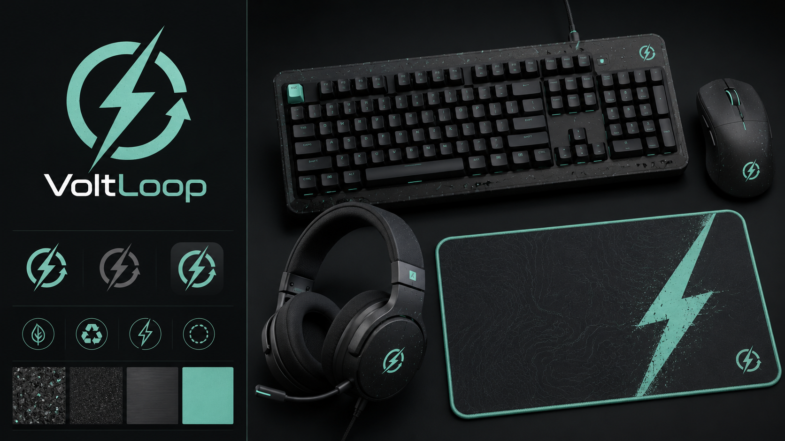
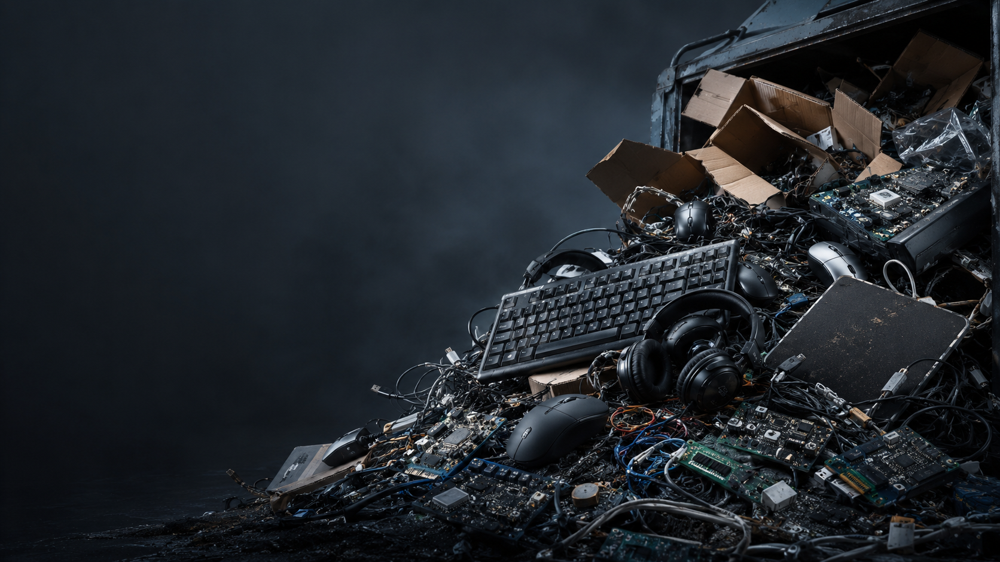
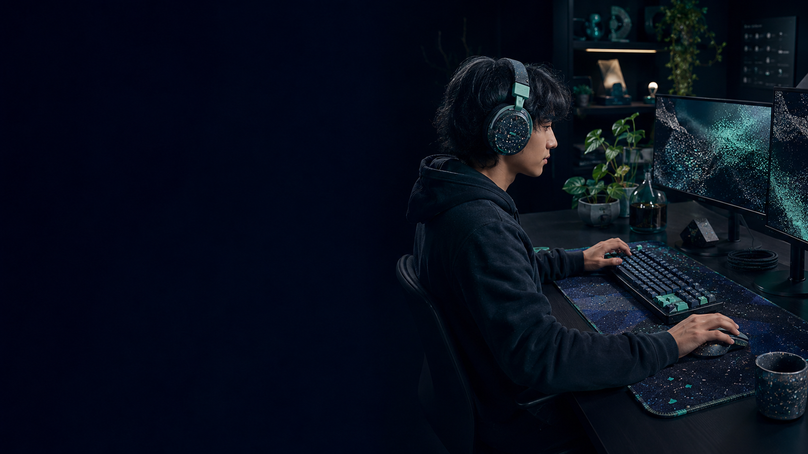
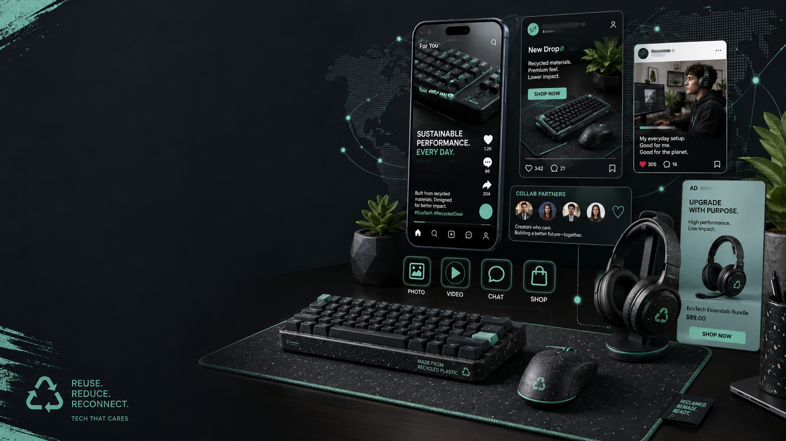
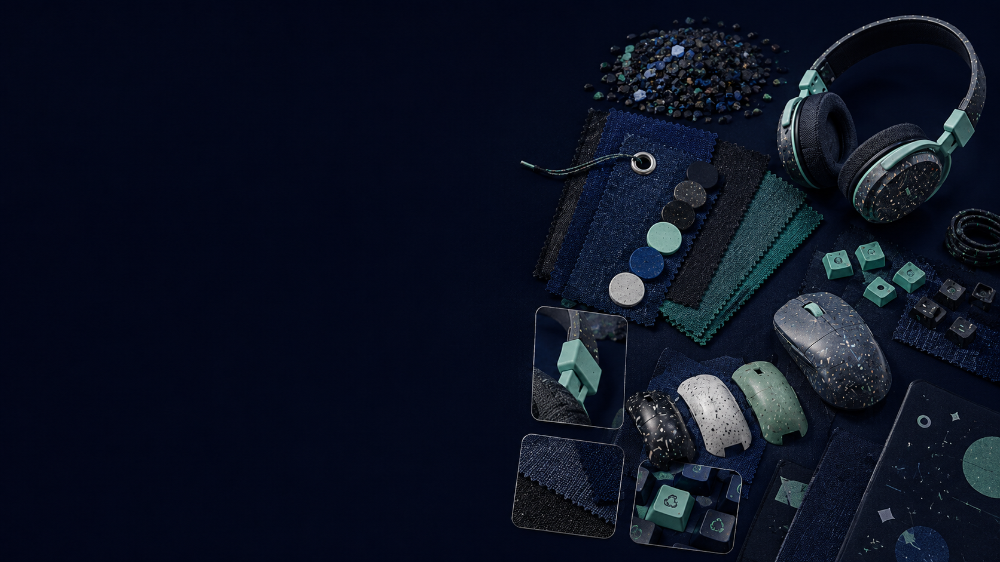
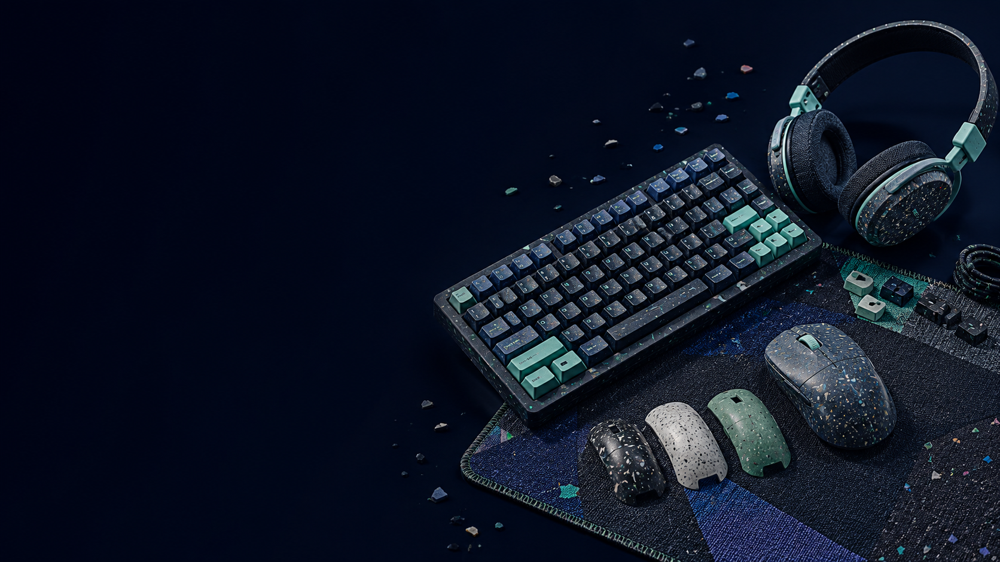
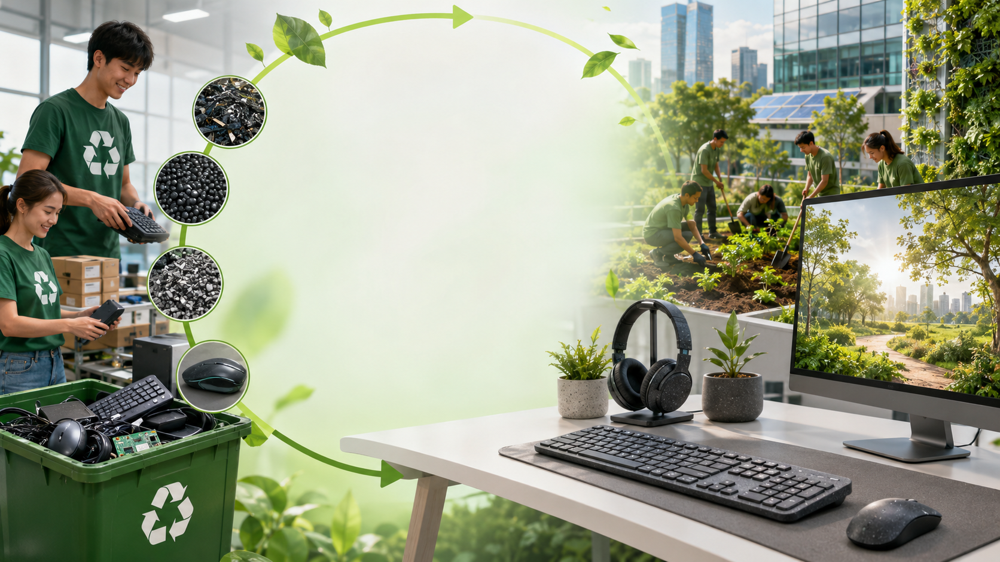

SDG 12 • Responsible Consumption and Production
VoltLoop
A social enterprise idea for recycled computer accessories — customizable keyboards, mice, headsets, and desk mats made from repurposed materials for modern setups.

Problem
What social/environmental issue is most meaningful?
Tech accessories are often treated as disposable, even when only one part is worn out or the style feels outdated. Keyboards, mice, headsets, desk mats, packaging, wires, and small electronic components can quickly pile up as waste.
That cycle creates unnecessary plastic and e-waste while encouraging constant replacement. This project responds to SDG 12 by rethinking how accessories are designed, upgraded, and kept in use longer.

Product/Service
What business idea can help solve the problem?
VoltLoop would offer a line of recycled computer accessories built for everyday use and personal style. The product line would include keyboards, mice, headset components, and desk mats made from recycled plastic, reclaimed fabric, and repurposed materials.
Customers could swap shells, keycaps, panels, or color accents instead of replacing the whole product. That makes the accessories more customizable, longer lasting, and less wasteful.

Customer
Who is buying your product?
The ideal customer is a tech-focused student, gamer, remote worker, or desk-setup enthusiast between 16 and 35. They spend hours on computers for school, work, gaming, or content creation and often shop online for accessories that match their setup.
Psychographically, they care about clean design, self-expression, and smarter consumption. Their persona is the eco-conscious tech user who wants gear that looks premium, performs well, and reflects sustainable values.

Marketing
How are you getting your product in front of your audience?
VoltLoop would market mainly through the digital spaces where its audience already discovers products: short-form video, social content, YouTube-style reviews, desk setup pages, and gaming communities.
The brand would use creator partnerships, before-and-after setup transformations, and product demos to show how recycled materials can still look sleek and high performing. Sales would run through a simple website supported by social content, limited drops, and shareable product visuals.

Branding
How will you connect with your customer?
The brand identity for VoltLoop is clean, modern, and eco-tech. A lightning-bolt logo communicates energy and performance, while the circular form suggests reuse, repair, and a continuous product life cycle.
The visual style combines dark tones with mint accents, recycled textures, and minimal typography to make sustainability feel premium rather than plain. The goal is to make environmentally responsible accessories feel exciting, stylish, and easy to trust.

Finance
How much will your product cost per unit? How much will you sell it for?
To keep the business realistic, the first launch item could be a recycled mouse and desk mat bundle with custom packaging.
Recycled plastic shell and outer materials: $6/unit
Internal components and hardware: $8/unit
Reclaimed desk mat materials: $4/unit
Packaging and labels: $2/unit
Assembly and labor: $5/unit
Estimated cost per unit: $25. Planned selling price: $55. Estimated gross profit: $30 per unit to help fund marketing, product development, and business growth.

Impact
How is the world better because of your work?
VoltLoop gives waste materials a second life by turning recycled plastic and reclaimed fabric into products people use every day. It also reduces the pressure to constantly buy brand-new accessories by making products customizable and easier to keep longer.
Beyond reducing waste, the brand helps normalize a more sustainable tech culture. If successful, it can show that better design, better performance, and better environmental choices can all exist in the same product.

Sources / Inspiration
References
United Nations. Sustainable Development Goal 12: Responsible Consumption and Production.
Logitech. Next Life Plastics / Post-Consumer Recycled Plastic. https://www.logitech.com/en-us/sustainability/post-consumer-recycled-plastic
Class project materials on audience, external environment, and social enterprise planning.
All slide visuals are presentation concept images created to support the project idea.